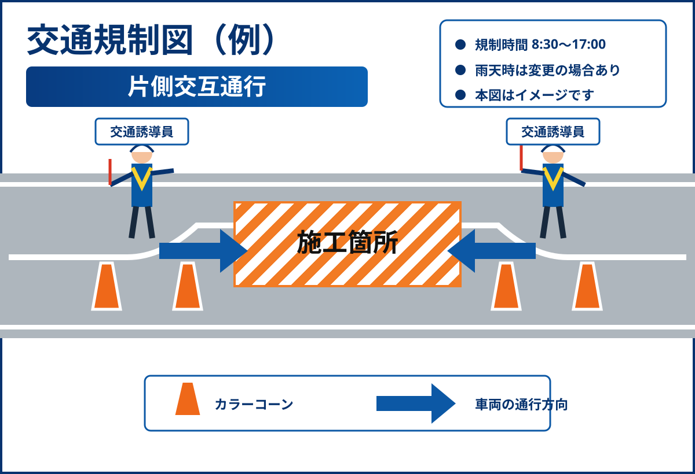

舗装復旧作業を予定しています
作業中は大型車両の出入りがありますので、周辺を通行される際はご注意ください。
静岡市清水区港町一丁目地内
より安全で、通行しやすい道路へ。
地域の皆さまの暮らしに配慮しながら工事を進めます。
MESSAGE
01
工事の基本情報と主な作業内容をご案内します。
本工事は、清水港周辺道路の安全性と利便性の向上を目的として、道路の拡幅、側溝の改修、舗装の打ち替え、歩道部の整備を行うものです。
02
工事の進捗や予定変更などを随時お知らせします。
作業中は大型車両の出入りがありますので、周辺を通行される際はご注意ください。
歩行者の皆さまは、現地の案内看板および交通誘導員の指示に従って通行をお願いします。
作業時間中は一部区間で片側交互通行を行います。
当面の間は、現地測量、仮設準備、交通誘導員の配置を行います。
03
工事期間中は、安全確保のため交通規制を実施します。
規制内容
作業の進み具合により、規制する範囲が変更となる場合があります。

04
7月の主な作業予定です。天候や現場状況により変更する場合があります。
※ 雨天・強風・現場状況等により、作業内容や日程を変更する場合があります。
05
皆さまから多く寄せられるご質問にお答えします。
通常は昼間作業を予定しています。ただし、交通量が多い箇所の舗装作業など、一部の作業では夜間作業を行う場合があります。その際は、事前にお知らせします。
原則として通行可能ですが、作業中は片側交互通行となる場合があります。時間に余裕をもって通行をお願いします。
作業箇所によっては、歩道の一部を通行止めにする場合があります。その場合は、仮設通路または反対側歩道への迂回をお願いします。
雨天や強風などにより、作業を延期する場合があります。予定が変更となる場合は、このホームページのお知らせ欄でご案内します。
06
ご不明な点やお気づきのことがございましたら、下記までご連絡ください。
清水港周辺道路改良工事 作業所
工事期間中は、地域の皆さまにご不便をおかけしますが、安全第一で作業を進めてまいります。